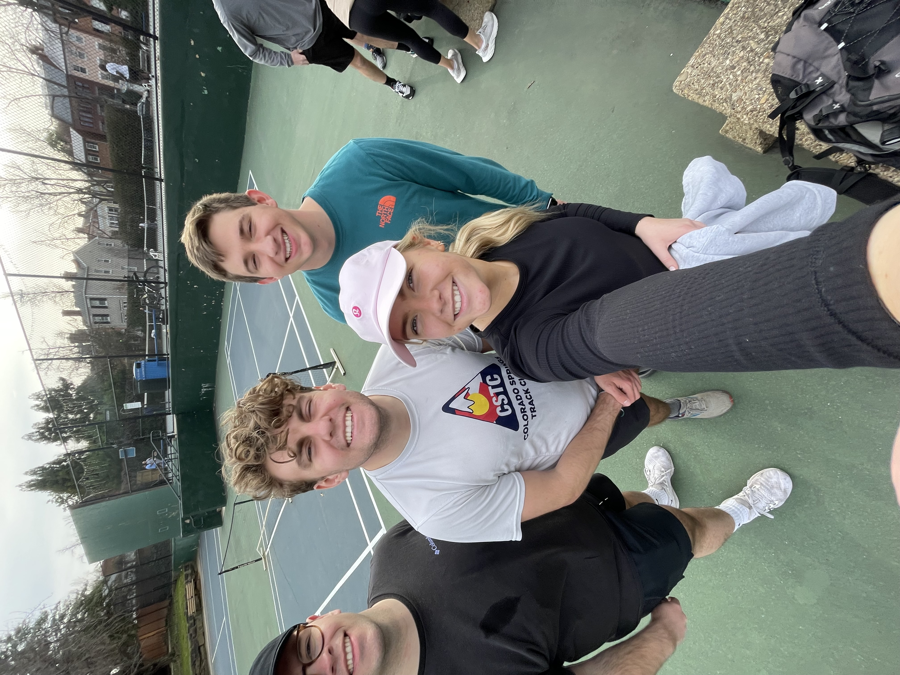

I have grown to love pickleball over the last few years. I have listed below some of the benefits of pickleball and a video of some of my favorite pickleball highlights!

Benefits of Pickleball
Physical benefits
Pickleball is a full-body workout that can help you:
Improve heart health: Pickleball can help lower blood pressure and cholesterol, and promote healthy blood flow
Build muscle and bone strength: Pickleball can help you improve your flexibility, balance, and agility
Boost brain health: Moderate exercise like pickleball can release endorphins, which can improve your mood and help you feel more confident
Reduce stress: Pickleball can help distract you from your worries
Social benefits
Pickleball can help you build community by providing opportunities for interaction and camaraderie:
Social engagement: Pickleball often encourages players to join teams, which can foster friendships and friendly competition
Counteract loneliness: Socializing can help counteract loneliness, which can increase the risk of depression, heart disease, stroke, and dementia